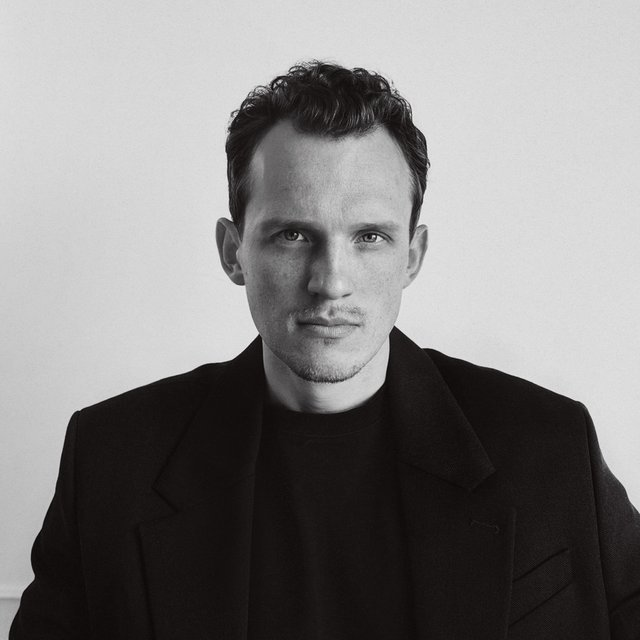

Помогаю проходить личные и управленческие кризисы
Бывший CTO Нетологии и CIO mos.ru. 14+ лет в управлении. Знаю кризисы как руководитель и как предприниматель.

Мне доверяют
Образование: МГТУ им. Баумана · MBA ВШЭ
С чем приходят
Перестало работать то, что работало
- Реорганизация буксует
- AI внедрили, а эффекта нет
- Компания растёт или сжимается быстрее, чем успевает управление
Карьера и роль руководителя
- Утонул в операционке
- Нужен следующий уровень, а прежний опыт не помогает
- Тупик, страх сокращения, долгий поиск работы
Не психотерапия: личное только в связке с работой и карьерой.
Кейсы
Реформа R&D на 40+ человек стоит год. Руководитель проводит 10+ встреч в день
Реформа завершена, руководитель повышен до директора
AI внедрили, поставка не ускорилась. Около 60 инженеров, США
Цикл поставки сократился с 3 недель до 1 за 5 месяцев
Техлиды получили по несколько команд посреди AI‑трансформации
Делегирование вместо ручного контроля
Руководитель проектного офиса в банке ТОП‑3 полгода в тупике
План на год и повышение до исполнительного директора
Знаю кризисы изнутри
Провал, который всё изменил
В 2017 году меня разнесли на собеседовании на CTO в биг-техе. После этого перестал строить незаменимость и начал строить систему.
Свой AI-стартап
Ушёл с позиции CTO в своё дело. Продукт и клиенты были, а масштаба не случилось. Закрыл.
Теннисный клуб в Белграде
2,5 года строил клуб и школу с нуля в новой стране и новой для себя отрасли. Закрыл.
Как работаю
Менторинг руководителей
Встреча раз в неделю и связь между встречами. Разбираем вашу ситуацию, выбираем действие, проверяем результат.
Advisory для CEO и фаундеров
Когда кризис охватил всю организацию: структура, роли, решения, AI‑трансформация.
Выступления и материалы
Отзывы
Исполнительный директор, Green Bank
«Полгода сомнений и внутренних разговоров были чётко структурированы и разложены по полочкам. После сессии у меня появился план горизонтом в год с конкретными шагами. Владимир сумел ухватить суть и дал конкретные реализуемые советы и рекомендации».
Founder & CEO, MPFact.ru
«Владимир кратко и понятно объяснил, как работать с программистами. После этого изменился наш CTO: он стал думать как предприниматель. Это точно поможет нам быстрее достичь целей».
CIO, UKids Academy
«Владимир идёт в глубину и разбирает детали, не останавливаясь на общих вопросах. Консультация дала трезвую обратную связь по моим концепциям и массу идей для развития».
Director of R&D, AutoDS
«Самым ценным стало трезвое заземление. Владимир помог стать эффективным фильтром между стратегией и реальностью, сохранив доверие в командах без потери требовательности».
Давайте поговорим
Отвечаю лично, быстрее всего в Telegram.